1 Introduction
By following this simple to use manual, you will quickly learn how easy it is to sign-up and either start making donations or start accepting donations with Fresh Food Omaha.
Topics discussed will include the following:
· Accessing the web application
· Signing up or logging in
· Making a donation
· Placing an order
1.1 Application Overview
In Omaha, and many metropolitan areas around the country, a shortage of fresh fruits and vegetables exists in certain areas called Food Deserts. Non-profit organizations, like the Food Bank for the Heartland, attempt to provide for those in need. The problem arises when the Food Bank does not receive enough donations and is forced to spend money, that could be used elsewhere, to make up for the shortage.
There are also individuals and organizations, such as Blackburn Alternative High School’s Horticulture Program, that grow more produce than they can consume and are looking to donating it. Oftentimes, the fresh fruits and vegetables expire before anything can be done with it.
Alternative Systems was tasked with creating a web application that would easily allow those with produce to give and those needing produce to come together. Our application allows producers to login and donate their surplus of produce and distributors to login and place orders for the donations to reduce their shortage.
1.2 Style Conventions
Throughout the user manual, important notes will be emphasized like the one below. Be sure to read these carefully and follow their direction.
Note: This is an example of a note that will be used throughout this user manual. Please read them carefully.
2 Getting Started
The following tutorials provide a step-by-step guide to using the application.
2.1 Access Application
Enter the following URL into the browser of your choice:
http://www.freshfoodomaha.com
2.2 Sign-Up/Login
After you have entered the URL, you will be presented with the login screen.
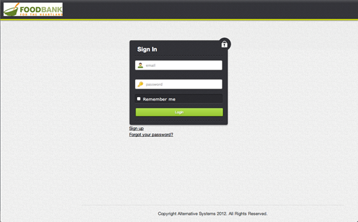
Figure 1
If you have already signed-up for the website, please continue to 2.2.3 Logging In.
2.2.1 Signing Up
Since this is your first time using the application, you need to create an account.
1. Click “Sign up” as shown in Figure 1 on the previous page.
2. Choose your organization. If your organization is not listed, see 2.2.2 Creating a New Organization.
3. Enter your first and last name, email address, and phone number.
4. Create and verify a password. Passwords should be a combination of alphanumeric characters to ensure security.
5. Click “Sign up”.
Your screen should look similar to that shown below in Figure 2 before clicking “Sign up”.
Figure 2
2.2.2 Creating a New Organization
Are you a new producer? The following steps will guide you through the process of setting yourself up as an organization.

Figure 3
1. After clicking “Sign Up” as shown in Figure 1, follow the directions and click “create one”. This will take you to the Register Organization page as shown in Figure 4.
2. Enter the name, address, email address, and phone number for your organization.
3. Click “Add organization”.

Figure 4
You will then be taken to the user registration screen, shown in Figure 5. This first user will administer the organization and have the ability to edit all users’ information within that organization.

Figure 5
Now that the organization has been created, all additional users should follow the standard registration process as described in 2.2.1 Signing Up.
2.2.3 Logging In
Upon completing registration, you will be automatically logged in to the application. The following steps will provide you with the information you need to log in the second, third, and more times.
1. Enter the email address you registered with.
2. Enter the password you created when you registered.
3. If you would like the computer you are on to remember you (not recommended on public computers), click the checkbox “Remember me”.
4. Click “Login”.
Figure 6 shows where each piece of information should be entered to login.
If you’ve forgotten your password, proceed to 2.2.4 Forgot My Password.
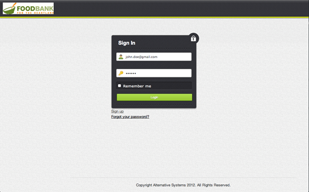
Figure 6
2.2.4 Forgot My Password
So, you’ve followed the recommendation to make a secure alphanumeric password, but now you can’t remember it? No worries. Follow the simple steps below and you’ll be back in the application in no time.
1. From the login screen, like that seen in Figure 6, click “Forgot your password?”.
2. Enter your email address that you registered with and click “Send me reset password instructions”. This screen is shown below in Figure 7.
3. Follow the directions in the email that is sent to you to reset your password.
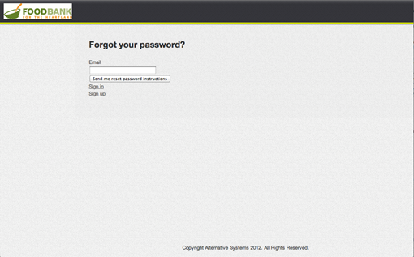
Figure 7
2.2.5 Logging Out
Are you done using the application? Don’t forget to logout. Follow these simple steps to ensure you have successfully logged out of the system.
1. From any screen, in the upper right of the screen, click “Logout”.
2. You will be returned to the login screen and confirmation will display at the top of the screen verifying that you have successfully logged out.
2.3 Producer – Using Application
Section 2.3 is meant for those users and organizations that are producers. A producer is an organization that grows produce for donation.
Figure 8 shows the dashboard that a user in a producer organization sees upon logging in to the application. This dashboard provides an overview of the user and their organization. Counts of the user’s donations along with their entire organization’s donations are shown.
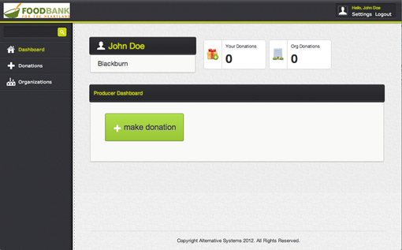
Figure 8
2.3.1 Making a Donation
You’ve grown and picked some delicious produce and are ready to donate it to those in need. Follow these steps to complete your donation.
1. Click the “make donation” button. (You will be taken to a screen that looks like that in Figure 9.)
2. Choose the product you are donating from the drop-down list. If your product is not listed, proceed to 2.3.2 Adding/Editing a Product.
3. Enter the quantity you are donating.
4. Choose a date from the calendar on which the produce was picked. It is very important that you choose the proper date as shelf life is taken into account and an expiration date is determined.
5. Optionally, you can click “add item” to donate more than one type of produce at a time. Figure 10 shows an example of this.
6. Click “Add donation” to have the system process your donation and add it to the available inventory.

Figure 9

Figure 10
7. You will then be taken to the donation confirmation screen, shown in Figure 11, which provides a summary of what was donated, on what date, and when it will expire.

Figure 11
2.3.3 Adding/Editing a Product
If a product that you would like to donate is not provided in the drop-down list, it can be added to the list. The following steps will guide you through the process.
These steps must be completed by the organization administrator (the person who signed up first and created the organization).
1. In the menu, along the left hand side of the screen, click “Products”.
2. All products currently in the system are displayed, as shown in Figure 12. You may choose to edit one of the current products, or create a new one by clicking “add product”.
3. You will then be taken to the Add Product page, which looks like that in Figure 13.
4. Enter the product name, the shelf life of the product (days, weeks, months), the category of the product, and how the product is traded (pounds, ounces, etc.).
5. Click “Add product” to save the product.
6. Finally, you will be taken to the product view, shown in Figure 14, to confirm the creation of the new product.

Figure 12
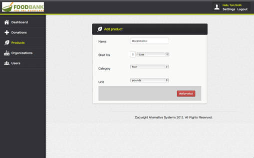
Figure 13
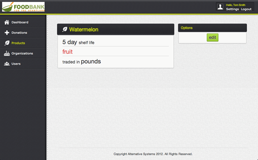
Figure 14
2.3.4 Updating User Information
In a digital world, information is constantly changing. This includes email addresses and phone numbers. We haven’t left out the ability to change these pieces of information. The following steps will guide you through the process.
1. From any screen, in the upper right of the screen, click “Settings”. You will be taken to the screen shown in Figure 15. This screen provides you with your account information, including your phone number and your number of donations.
2. On the portion of the screen labeled “Options”, click “edit”. You will then be taken to the screen shown in Figure 16.
3. Here you can update your first and last name, email address, and phone number.
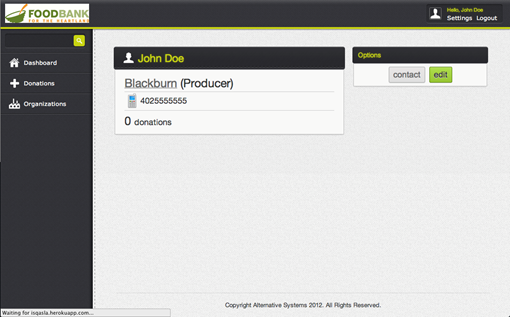
Figure 15
Figure 16
2.3.5 Updating Organization Information
As with users, the contact information for your organization itself may also change over time. Follow these steps to update the organization information.
These steps must be completed by the organization administrator (the person who signed up first and created the organization).
1. While logged in as the administrator for the organization, along the left hand side, click “Organizations”. Figure 17 shows the screen you will be taken to.
2. In the list of organizations, find your own. Click “edit” (pencil) next to your organization.
3. You will then be taken to a screen that looks like that shown in Figure 18. Make all necessary changes.
4. Click “Save changes” to submit your new information.
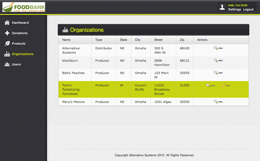
Figure 17
Figure 18
2.4 Distributor – Using Application
Section 2.4 is meant for those users and organizations that are distributors. A distributor is an organization that accepts donations and distributes goods to those in need.
Figure 19 shows the dashboard that a user in a distributor organization sees upon logging in to the application. This dashboard provides an overview of the user and their organization. Counts of the user’s orders along with their entire organization’s orders are shown.
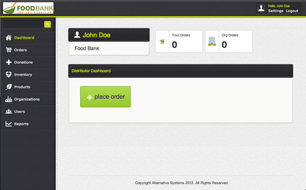
Figure 19
2.4.1 Viewing Available Inventory
Being a distributor, the first thing you will likely be doing each time you log into the application is viewing available inventory. Follow the steps below to learn how to view the available inventory.
1. In the menu, along the left-hand side of the screen, click “Inventory”. You will be taken to the inventory screen shown in Figure 20.
Figure 20
2.4.2 Placing an Order
People need fresh fruits and vegetables, and you’ve made it your mission to help provide fresh produce to them. Follow these simple steps to place an order for available items that have been donated.
1. From the distributor dashboard, click “place order”. You can also place an order by clicking on “Orders” in the menu bar and then choosing “add order”. Either way, you will be taken to the screen shown in Figure 21.
2. Current product availability will be displayed along with an order form. Choose the product you would like to order and the quantity.
3. If you would like to order multiple products, you can click “add item” and add another product to your order.
4. Click “Add order” to submit your order.
5. After placing your order, you will receive an email providing you with the information for the producer that donated the produce. A sample email is shown in Figure 22.
Figure 21
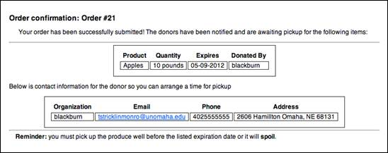
Figure 22
2.4.4 Adding/Editing a Product
If a product that you would like to donate is not provided in the drop-down list, it can be added. If the shelf life or units is incorrect, it can be edited. The following steps will guide you through the process.
These steps must be completed by the organization administrator (the person who signed up first and created the organization).
1. In the menu, along the left hand side of the screen, click “Products”.
2. All products currently in the system are displayed, as shown in Figure 23. You may choose to edit one of the current products, or create a new one by clicking “add product”.
3. You will then be taken to the Add Product page, which looks like that in Figure 24.
4. Enter the product name, the shelf life of the product (days, weeks, months), the category of the product, and how the product is traded (pounds, ounces, etc.).
5. Click “Add product” to save the product.
6. Finally, you will be taken to the product view, shown in Figure 25, to confirm the creation of the new product.

Figure 23

Figure 24

Figure 25
2.4.5 Updating User Information
In a digital world, information is constantly changing. This includes email addresses and phone numbers. We haven’t left out the ability to change these pieces of information. The following steps will guide you through the process.
1. From any screen, in the upper right of the screen, click “Settings”. You will be taken to the screen shown in Figure 26. This screen provides you with your account information, including your phone number and your number of donations.
2. On the portion of the screen labeled “Options”, click “edit”. You will then be taken to the screen shown in Figure 27.
3. Here you can update your first and last name, email address, and phone number.
Figure 26
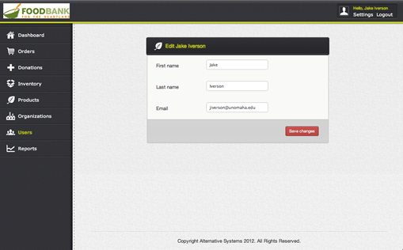
Figure 27
2.4.6 Updating Organization Information
As with users, the contact information for your organization itself may also change over time. Follow these steps to update the organization information.
These steps must be completed by the organization administrator (the person who signed up first and created the organization).
1. While logged in as the administrator for the organization, along the left hand side, click “Organizations”. Figure 28 shows the screen you will be taken to.
2. In the list of organizations, find your own. Click “edit” (pencil) next to your organization.
3. You will then be taken to a screen that looks like that shown in Figure 29. Make all necessary changes.
4. Click “Save changes” to submit your new information.

Figure 28
Figure 29
3 Troubleshooting
3.1 Errors While Signing Up
Below is a screenshot of some of the errors you may encounter during sign-up along with a description on how you can avoid these errors.
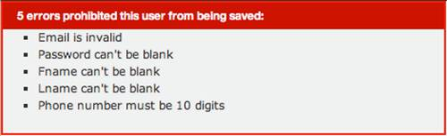
· Email is invalid: an email address is a vital part of this system as notifications are sent and received via email. You must enter a valid email address (i.e., yourName@domain.com).
· Password can’t be blank: a secure password is very important in a web-based application. It is required and must be at least 6 characters in length. It is recommended that you use an alphanumeric password (combination of letters, numbers, and characters) and change it regularly.
· Fname can’t be blank: because we are creating a community of producers and distributors, it would be nice to get to know you by name. Please enter your full first name.
· Lname can’t be blank: for the same reason as your first name, please enter your full last name. If you are a student user of an organization and would feel more comfortable simply entering the first letter of your last name, that is acceptable also.
· Phone number must be 10 digits: your personal phone number will not be given out when you make a donation or submit an order. Instead, the phone number registered under your organization will be provided. If you would prefer to enter your organizations phone number here, you are welcome to. Otherwise, enter your contact number.